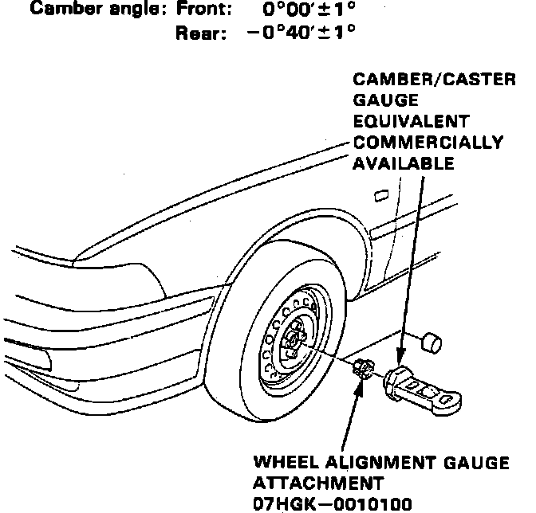

Camber
Fig. 4 Front Camber Angle Check:

Front and rear camber angles are not adjustable, however, the following procedures may be used to ensure camber is within specifications. Ensure tires are properly inflated prior to checking camber angles.
1. Remove spindle nut and install suitable camber gauge and adapter, Fig. 4, with wheels in straight-ahead position.
2. Note gauge reading with bubble centered on the gauge. If camber is not within specifications, inspect suspension components for damage and repair as necessary, then recheck camber.